Toca la región resaltada para viajar en el tiempo
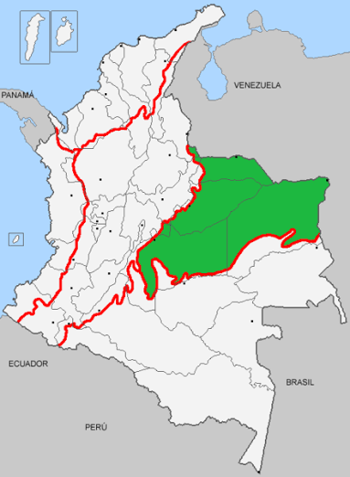
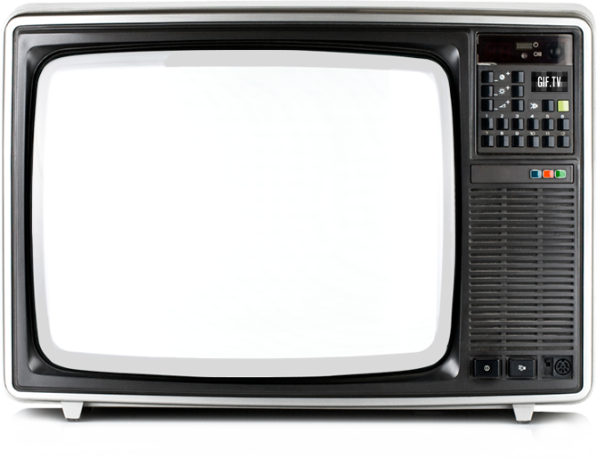
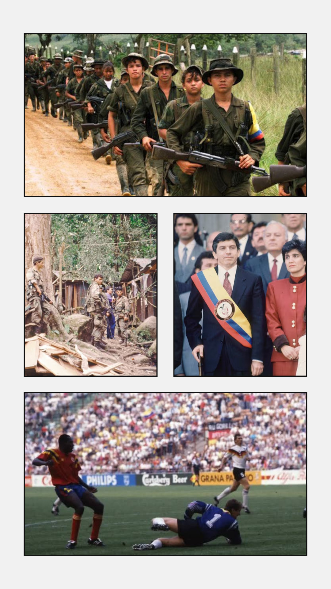
Firma por vía al Llano, Ofensiva Casa Verde, Cesar Gaviria, Mundial 1990
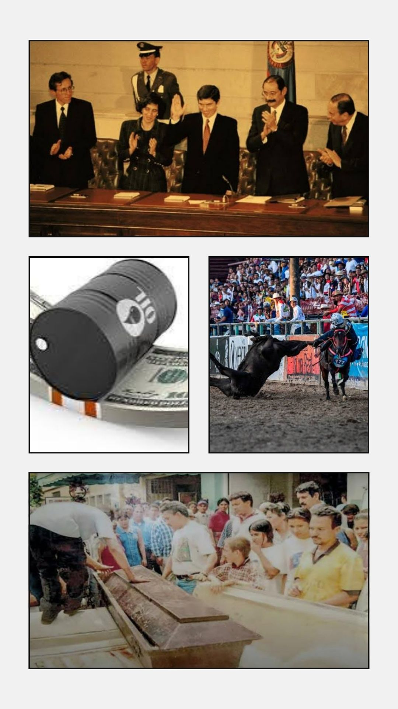
Constitución 1991, yacimientos de petroleo, masacre de Ariporo, fortalecimiento Cultural, nuevos departamentos.
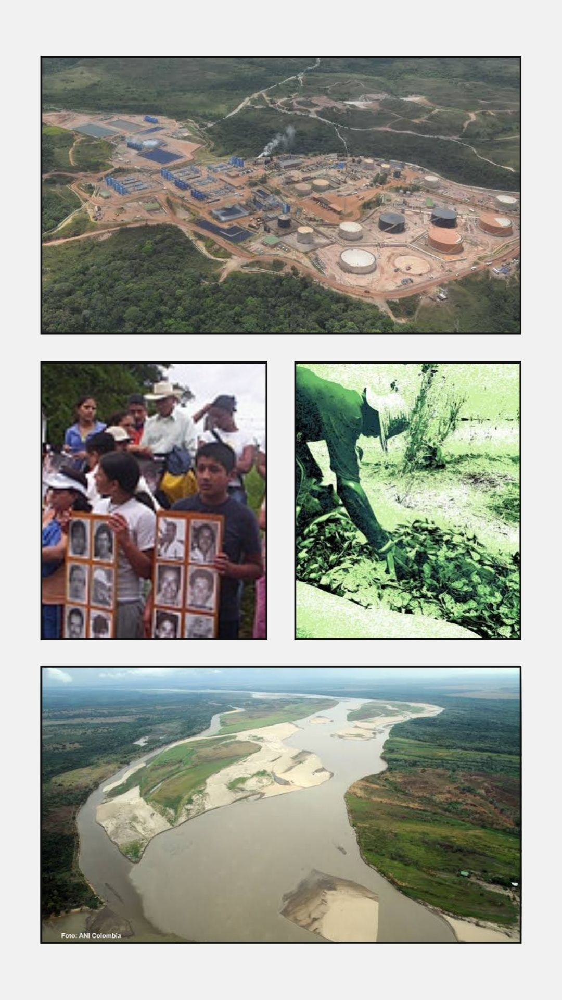
Progreso petrolero, masacre de Caño Sibao, cultivos ilicitos de coca y uso del río.
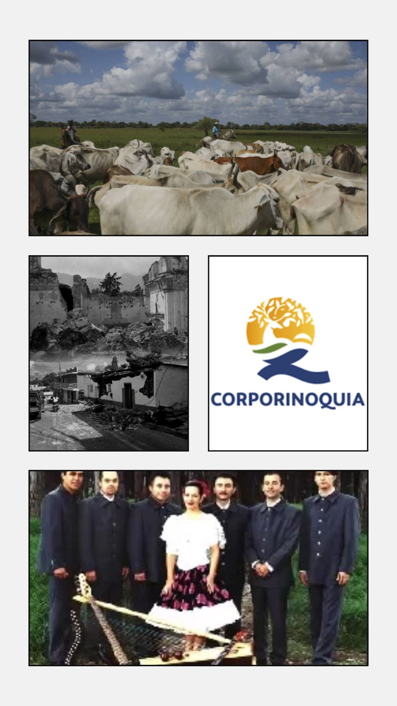
Fundación Corporinoquia, Libro sobre geografía humana de la región, desastres naturales.
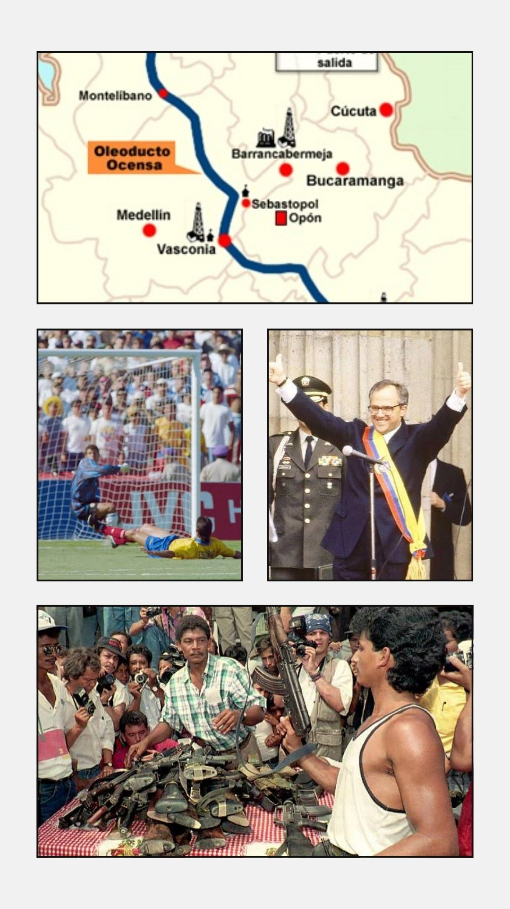
Oleoducto Ocensa, Ernesto Samper, terror y violencia
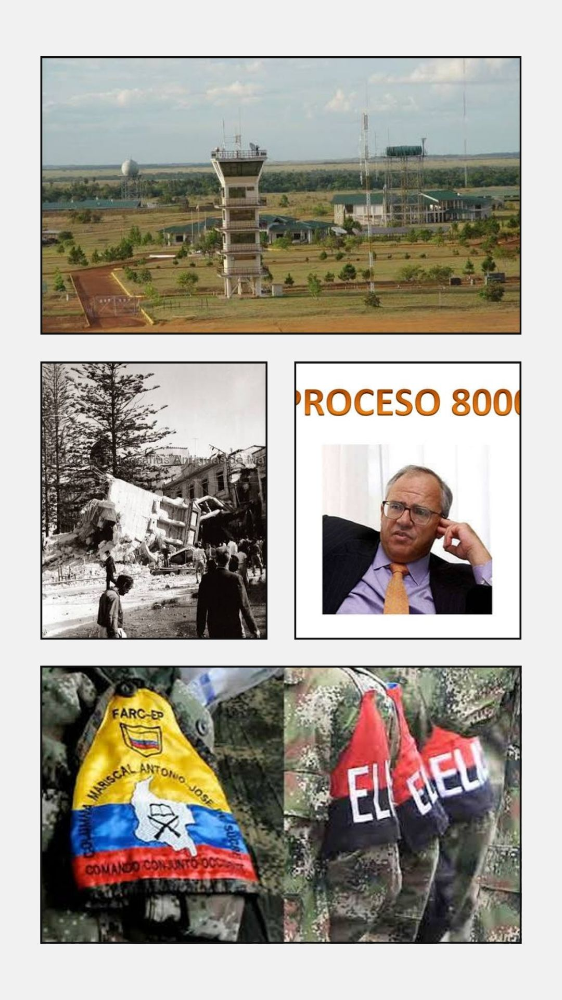
Radar Estadounidense antinarcotráfico, política 8000, terremoto Tauramena, disputas territoriales San Martín
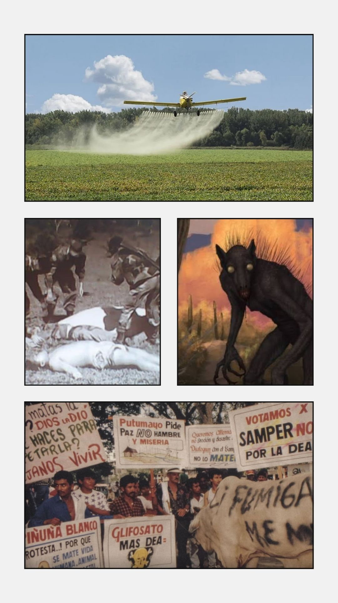
Universidad Nacional, fumigación con glifosato, marchas cocaleras, toma de Las Delicias, mito del Chupacabras
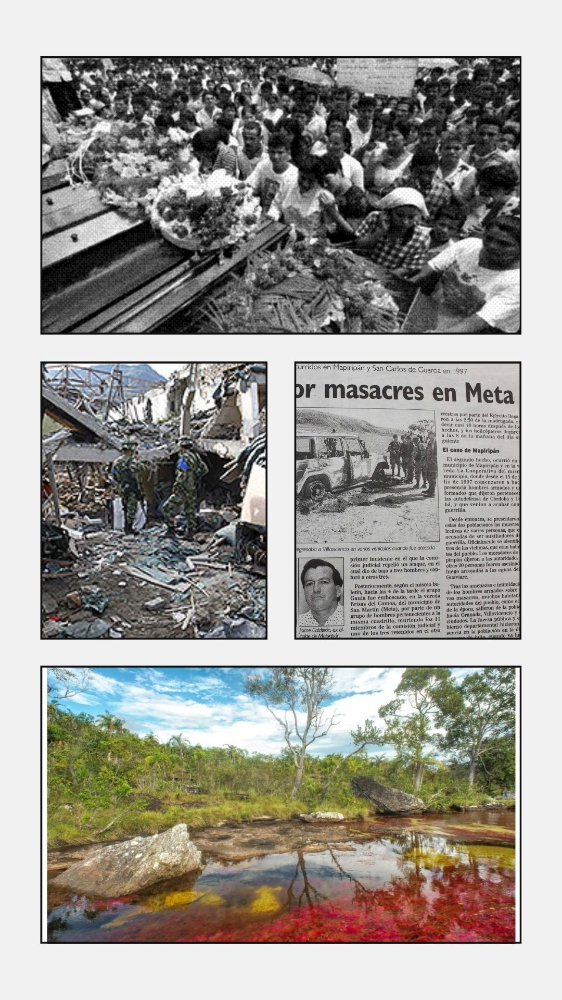
Disputas en Puerto Lopez, masacre de Mapiripán, toma de Base militar Patascoy, creación PNN Tinigua
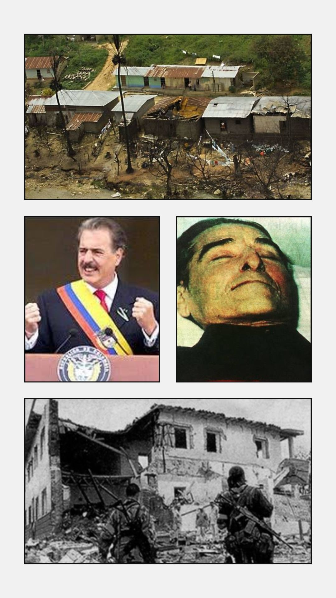
Masacres en puerto Gaitan y rio Meta como fosa común y ruta para el narcotráfico, Andres Pastrana, Muerte del "Cura Perez", toma de Mitú
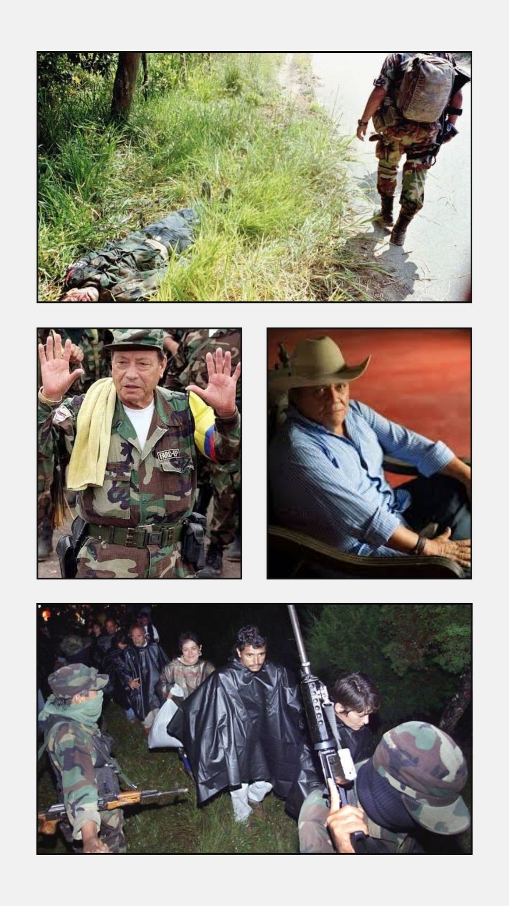
Dialogos del Caguan, Batalla en Puerto Lleras y Ariari, la silla vacía, "cholo" Valderrama, desmilitarización Caño Cristales
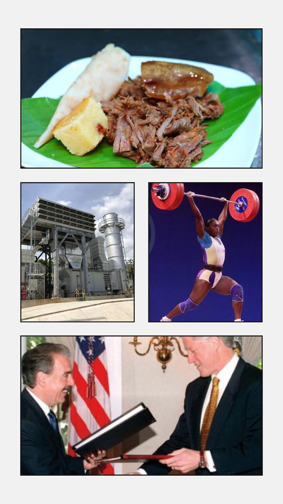
AUC vs. FARC en Cumaral, inauguración Termoyopal, Maria Isabel Urrutia, plato tipico de Cumaral, apoyo estadounidense para combatir el narcotrafico.
Hecho por: Grupo Orinoquía 2000-1990